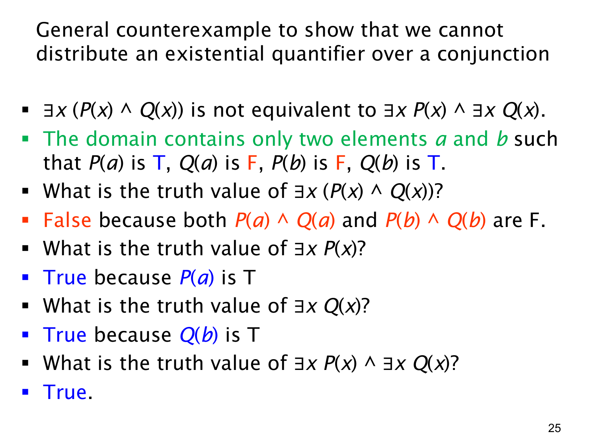

L1.2 · 第 25 页讲解原文
查看这一页课件

一般反例：两个分别存在的见证未必是同一个
这页把第 24 页的数值例子抽象成只有 a,b 两个元素的论域，并规定
| 对象 | P | Q | P∧Q |
|---|---|---|---|
| a | 真 | 假 | 假 |
| b | 假 | 真 | 假 |
首先检查 ∃x(P(x)∧Q(x))。a 的合取为假，b 的合取也为假；整个论域中没有任何对象同时满足两个谓词，所以这个式子为假。
接着分别检查 ∃xP(x) 与 ∃xQ(x)。前者由 a 作为见证，为真；后者由 b 作为见证，也为真。因此
(∃xP(x))∧(∃xQ(x))≡T∧T≡T.
左右在同一解释下真值不同，证明 ∃x(P(x)∧Q(x)) 与 (∃xP(x))∧(∃xQ(x)) 不逻辑等价。这种两元素模型抓住核心差别：右式允许 P 和 Q 各自有不同见证，左式要求一个共同见证。
特别要注意，课件两个拆开的量词虽然都使用字母 x，各自的作用域彼此独立；它们并不要求取相同的元素。为避免误读，也可以把右式写作 (∃xP(x))∧(∃yQ(y))。